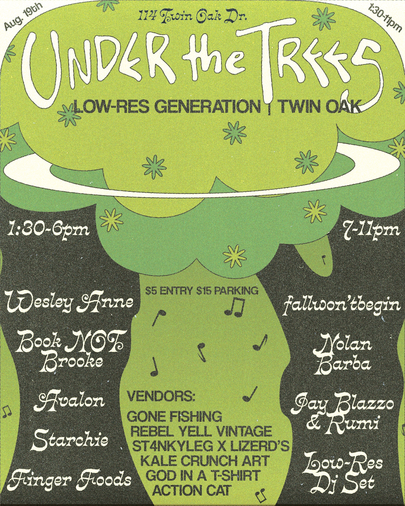
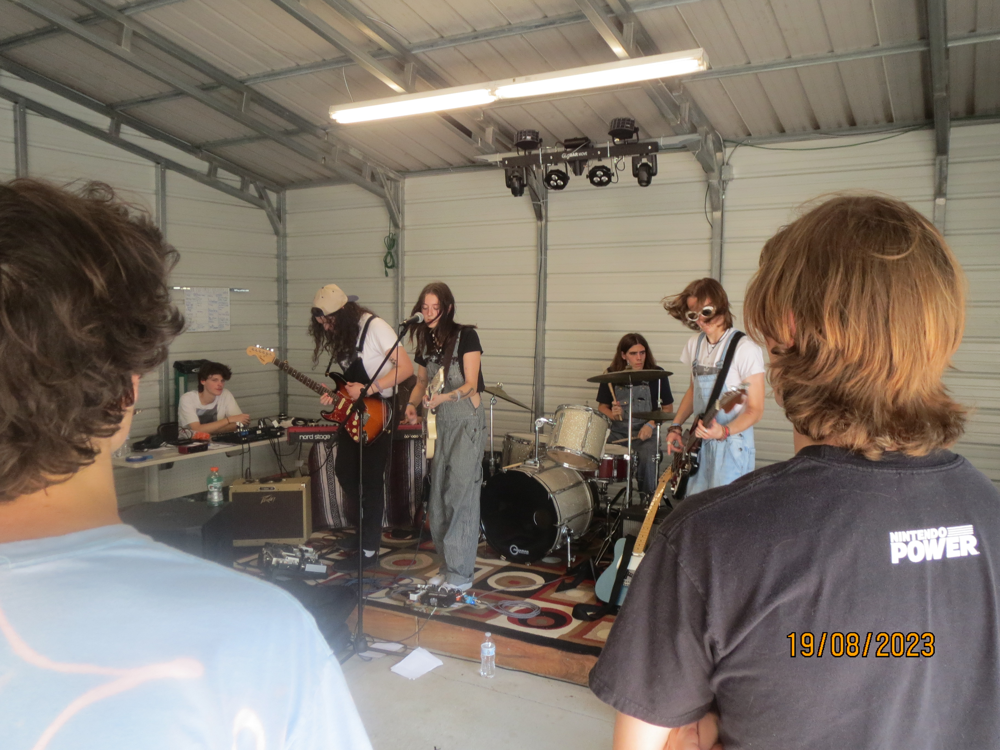
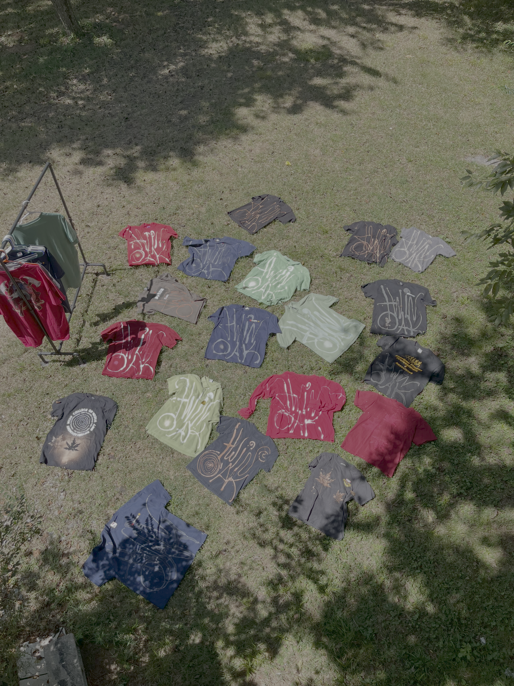

Music festival
Under the Trees
An ambitious event concept developed over several months with my best friends. We wanted every element to be intentional—from the lineup and promotional material to the food.
We built the stage, bought a sound system, and power-washed the entire garage. It was an invaluable experience that pushed me as a leader.



Event video